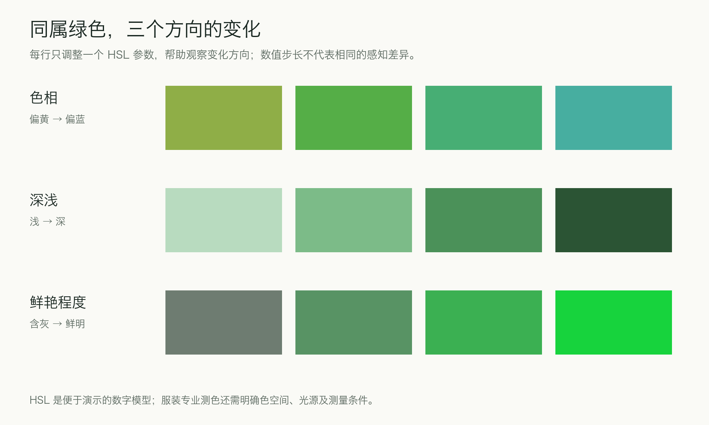
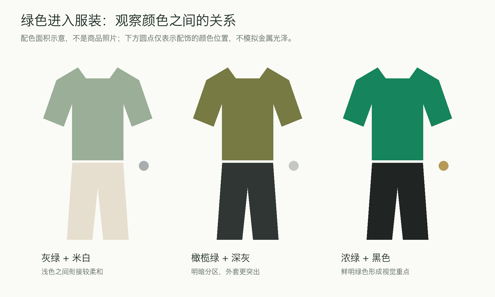

薄荷绿较浅、偏冷，森林绿深暗，橄榄绿偏黄、含灰。我们对它们的不同感受，一方面来自这些可见的颜色差别，另一方面来自草木、玉石、军装等熟悉事物带来的联想。
从色谱认识绿色

图中色值用于比较。鼠尾草绿、森林绿、玉绿等名称没有统一的对应色值，不同品牌的命名可能重叠；准确沟通仍需色卡或实物样本。
绿色是一个连续的颜色范围。图中的十二种名称，可以通过三个方向来理解。
第一是色相，也就是绿色偏黄还是偏蓝。黄绿与蓝绿位于不同方向，常见联想也会不同：嫩芽、青柠与橄榄，和深水、青玉与孔雀羽毛，提供了不同的观看经验。
第二是明度，也就是视觉上的深浅。薄荷绿和瓶绿即使都偏冷，前者仍然较轻，后者则显得更有分量。
第三是彩度，也就是颜色鲜明的程度。灰绿的绿色倾向比较含蓄，鲜绿则更突出。日常所说的“饱和度”也经常用于描述鲜艳程度；专业色彩学对二者有不同定义，使用具体数值时需要明确模型。

图中用 HSL 数字模型演示变化方向。相同数值步长不代表相同的视觉差异，也不意味着每行其余感知属性完全不变。
“绿”这个名称只能说明大致的颜色范围。解释它带来的感受，还需要一起观察深浅与鲜艳程度；有关色彩情绪评价的实验也提示了这些因素的重要性。色相、饱和度与明度的研究
不同绿色的视觉感受
以下结合颜色特征与常见应用，分析不同绿色容易呈现的视觉气质。
浅绿的轻盈，可以有不同方向。
对照色谱里的开心果绿与薄荷绿：两者都比较浅，但开心果绿偏黄，薄荷绿偏蓝。前者与嫩芽、果仁的联想较接近，后者则容易让人想到薄荷、清水与清凉感。浅色提供了共同的轻盈感，偏色又让它们分出不同方向。
放进配色中，这种区别会更具体。开心果绿与米白、浅棕组合，容易延续温和的暖意；薄荷绿与白色、浅灰组合，清凉感则更连贯。这些搭配并没有改变绿色本身，却借助周围颜色强化了它的某些特征。
草绿与鼠尾草绿，区别不只在深浅。
色谱中的草绿较鲜明，鼠尾草绿含灰，两者的明暗也有差别。比较时，除了看哪块颜色更浅，还可以看它们与灰色的距离：草绿的绿色倾向明确，鼠尾草绿则更接近带有绿意的灰色。
这能解释为什么它们铺开成大面积时，给人的感受不同。鲜明草绿可以让墙面、包袋或上衣直接成为观看重点；灰绿与米白、灰褐、浅木色放在一起，色彩之间的变化比较缓和。针织或棉麻的纹理，也更容易参与这种柔和的整体。
灰感并不保证颜色在任何画面里都不醒目。一件灰绿上衣出现在大面积红褐背景前，仍然可以很突出。颜色自身的鲜艳程度，与它在具体画面中的显眼程度，需要结合周围关系一起看。
偏黄而较暗的绿色，容易与土地、植物和实用物品产生联系。
橄榄绿含有较明显的黄、灰或褐色感；苔绿通常也偏含灰，但与森林、湿润植物表面的联想更接近。这些颜色与棕色、米色、牛仔蓝组合时，容易形成自然、朴实的整体。
军绿还带着具体的使用历史：制服、工装与户外装备不断强化了它与实用性的联系。因而，“军绿显得硬朗”既有颜色因素，也有我们熟悉的物品和服装结构参与。
卡其色需要另作区分。它的商品命名可以覆盖米褐、土黄和部分橄榄色，不能把所有标作 khaki 的衣服都当成同一种绿。
深绿与鲜明的浓绿，可以分别强调沉静和存在感。
色谱里的森林绿与瓶绿都较暗，绿色在暗处容易与近黑的阴影衔接。用于大衣或厚实织物时，整体首先呈现较深的色面，光照到肩部、褶皱和边缘之后，绿色的层次才逐渐显现。这种明暗关系可以形成沉静、厚重的视觉分量。
把森林绿与图中的祖母绿并排看，祖母绿的绿色倾向更鲜明，也更亮一些。日常所说的“浓绿”可能同时指颜色深、颜色鲜，两者其实可以分开：一块绿可以很暗、很含蓄，也可以较深但仍然鲜明。
这一区别进入服装后尤其重要。深而含蓄的绿放在哑光毛呢上，重点容易落在体积与轮廓；鲜明的浓绿放在缎面上，表面的亮暗变化会进一步强调颜色，使它具有更强的装饰感。所谓“沉静”或“华丽”，由此有了颜色与材料上的具体依据。
玉绿与蓝绿则向蓝色方向移动。前者的命名常借用玉石的印象，后者覆盖的范围更广。浅一些可以清透，深一些可以冷静、深邃。单独一个色名无法把这些差异全部说清。
鲜亮的黄绿，适合建立醒目的观看重点。
青柠绿、酸性绿等商品名称，常用来形容偏黄、鲜明的绿色。它们可以出现在运动装、街头服饰和醒目的图形设计里。它们强调活跃和存在感，与灰绿、深绿呈现的含蓄感有明显区别。
“荧光绿”还需要留意实物材料。日常形容颜色很亮，与材料真正具有荧光性质，是两回事；普通屏幕色块也无法完整再现荧光材料的表现。
自然联想与视觉生理
绿色常让人想到草木、庭院与山林，这为它的自然感提供了生活经验。颜色偏好与相关事物的联想之间存在联系：新鲜蔬菜、树木和霉变，虽然都可能呈现绿色，带来的感受却不同。颜色偏好与事物联想的研究
“心旷神怡”还涉及整个环境。户外的空间、光线、声音以及活动方式，都可能参与其中。因此，把森林中的舒服感直接等同于一块绿色的作用，会漏掉许多因素。
从视觉生理看，明视觉条件下，标准光谱光视效率曲线在约 555 纳米的黄绿区域达到峰值。它衡量不同波长光引起的亮度响应，并不衡量喜欢或放松程度；据此不能得出“绿色最护眼”或“绿色最受欢迎”的结论。NIST：坎德拉与光度测量
理解波长，也需要区分发光与反光。看叶片或衣服时，光照到表面，一部分被吸收，另一部分被反射或透过；不同波段的比例，连同视觉系统的处理，共同形成我们看见的颜色。屏幕则通过不同发光成分的组合呈现绿色。
叶绿素对不同波段光的吸收有差异，使许多叶片在日常光照下呈现绿色；叶片的年龄、其他色素、表面结构和光照，又让它们显出不同的绿。自然中的绿色本身就有丰富变化。
绿色在不同领域的应用
生活空间里，含灰的浅绿可以参与柔和配色，深绿则可以与木材、黄铜和厚实织物建立分量。食品与日用品包装里，绿色可以借助植物、清凉或新鲜的联想传递信息。户外装备中的橄榄绿与苔绿，则与植被环境、实用结构相互呼应。
这些应用借用了人们对绿色的熟悉经验。包装上的绿色能够传达天然、清新的意向，产品是否环保或健康，则需要另外查看材料、成分与相应证据。
材质怎样改变服装中的绿色
一件橄榄绿棉布夹克，口袋、压线与较清楚的衣身结构容易强化实用感。相近的颜色换成柔软针织，可以显得更亲近；换成光泽明显的缎面，又会出现精致、流动的效果。
其中一个原因是表面如何反光。较哑光的织物容易呈现较稳定的色面；光滑、有光泽的表面会随着角度与褶皱出现明显亮暗变化，颜色在同一件衣服上便有了更多层次。
缎面描述织物组织与表面效果，不能直接等同于真丝。缎纹中较长的浮线有助于形成平滑、光泽明显的表面。CottonWorks：基本织物组织
光照也会改变衣服的颜色。两件在店里看似同色的衣服，换一种照明后可能显出区别；商品图上的绿色、试衣间里的绿色和日光下的绿色，也可能不同。观察实物时，可以比较自然光与室内照明下的表现。
配色面积与观看重点

灰绿与米白组合，上下身的明暗反差较缓和，容易显得轻、柔。橄榄绿配深灰，色块分区更清楚，外套的形状可以成为重点。鲜明的浓绿配黑色，绿色更容易获得独立的存在感。
同一种绿只放在包或鞋上时，可以成为点缀；扩展到整件大衣或连衣裙时，便会参与决定整个人的主要色调。颜色名称没变，面积和位置已经改变了效果。
服装中的“气质”，就在这些关系中逐渐形成：颜色本身提供方向，面料、剪裁和搭配继续调整它。
ZARA：两套绿色造型的具体分析
绿色缎面衬衫：含灰的颜色，也能有鲜明的存在感。

图片来源：ZARA 官方商品图。绿色缎面拉链衬衫，款号 4764/040/500。
图中的绿色带有灰感，颜色比较含蓄。它之所以仍然醒目，首先与红褐色砖墙有关：背景偏暖，衣服的绿色与之形成清楚的色相区别。人物穿着相近绿色的上下装，绿色又占据了身体的大部分面积，因而成为画面中完整、集中的色块。
光泽进一步改变了这块绿色。袖子与胸前有较亮的区域，衣摆附近的褶皱则形成暗部。绿色并没有保持均匀，随着布面朝向变化，出现了不同的深浅。商品页将其标作缎面衬衫；照片中能观察到的，正是这种表面随光线变化的效果。
轮廓也参与了表达。肩部自然下落，衣身留有余量，收拢的下摆让宽松布面形成褶皱。翻领与正中的拉链保留了一些整齐感，柔软表面又减弱了生硬程度。因此，这套造型的气质可以同时包含松弛与精致：前者来自衣服与身体之间的空间，后者来自光泽、褶皱和集中的配色。
这张照片也说明，含灰的绿色并不天然退居背景。颜色面积、背景色与光线，可以让一块柔和的绿成为主角。
卡其色系猎装：实用感来自颜色与结构的配合。

图片来源：ZARA 官方商品图。系带猎装外套，官方色名 Khaki，款号 7922/603/505。照片呈现偏黄、带褐感的橄榄绿色系。
这套造型的绿色比上一张更偏黄，带有土色感。外套上的翻领、带盖贴袋、前襟纽扣和腰带，又提供了明确的实用服装线索。颜色与这些细节相互呼应，使“朴实、实用”的感受有了具体来源。
但它也没有只停留在硬朗上。腰带把衣身向中间收拢，袖子卷起，同色长裤较宽松，服装表面有自然褶皱。整齐的结构与较松的穿着状态放在一起，让造型保留功能感，同时具有日常的从容。
白色内搭出现在领口，把面部附近提亮，也与浅色建筑形成呼应。深色斜挎带从肩部斜穿过衣身，为大面积橄榄绿加入了一条清楚的线；深色鞋子在下方与斜挎带形成呼应。这里的配色数量不多，区别主要来自颜色的位置、面积和明暗。
两张图的背景与光照也不同。缎面衬衫在暖红墙前显得突出，猎装在浅色建筑前呈现出较安静的土色感。我们感受到的绿色，始终与它所在的完整画面有关。前者通过光泽与柔软褶皱强调精致，后者通过口袋、腰带和偏黄绿色强调实用；两者都借助宽松余量保留了自然的穿着状态。
理解绿色的价值，也正在这里：看见一件绿色衣服时，可以逐步说清自己喜欢什么——是偏冷的色相、柔和的灰感、浓郁的深色，还是它与面料、光线和其他颜色之间形成的关系。
留言
由 Disqus 提供。